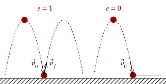
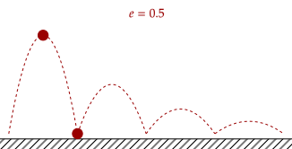

We have seen that there are multiple ways that interactions can occur. Sometimes things stick together after colliding, sometimes they blow up, sometimes they rebound. These interactions can be described by one quantity.
This coefficient, like the coefficient of static and kinetic friction, is unitless. It was developed by Sir Isaac Newton.

As said, it determines the "elasticity" or "bounciness" of two objects after colliding. Qualitatively, a low coefficient means that the objects have very low bounciness, while a high coefficient means that the objects have high bounciness.
Above, we can see that the bounce with coefficient of restitution being one has the ball bounce all the way up to the same height, while the bounce with zero elasticity has the ball stick straight to the floor after the bounce.

Here, the coefficient of restitution is 0.5, and we can see that the height of the bounces slowly deminish, as with what would happen realistically in real life.
We now give the equation for the coefficient of restitution, which is as follows. We will choose, without loss of generality, object and .
The use of absolute value gives us that the coefficient of restitution is strictly non-negative. However, it can also be zero. The numerator is the difference of the final velocities, and the difference of the initial velocities.
One way to interpret the equation is the following.
Here are some remarks you may notice.
- If the speed of seperation is equal to the speed of approach, .
- If the speed of seperation is equal to zero, ; this means the objects stick together.
Question 1a
Newton's cradle (pictured below) is a physics toy which shows how momentum is conserved between collisions. As one ball is raised on one side, the ball on the opposite side swings to around the same height as where the first ball was raised.

Are the collisions between the balls elastic or inelastic? In other words, do they have a high or low coefficient of restitution?
Answer
The velocity of the first ball hitting the row of other balls is transferred (almost completely) to the ball on the other side, causing it to reach the same height. Thus, the speed of approach and separation is around the same, so the collisions are quite elastic; the coefficient of restitution is high.
Question 1b
After some time, the balls will stop clicking and slowly go to rest. Why?
Answer
One explanation is via noting air resistance, however we will focus on that since , even if the coefficient is high, the velocity will slowly dwindle down until it is practically zero; at rest.
Question 2
What would it mean if ? Is this possible in real life?
Answer
This would imply that the speeds of the two objects going into the collision is less than the speed going out. In other words, it would be like if you dropped a ball and it bounced higher than where you dropped it. It's impossible in real life.
The computation for the coefficient of restitution in a collision is trivial (it is simply just finding the initial and final velocities in a collision, which we have done before). Thus, we will tackle more interesting problems instead.
Exercise 1
Show that in a rebound against a stationary object, given the initial and final velocities of the object rebounding, the coefficient of restitution is the following.
With this, compute for the coefficient of restitution given a superball rebounding at a speed of nine tenths of its original speed.
Answer
Since the object remains stationary before and after the rebound, we can set its velocity as zero. This also works well with our other definition; the initial velocity of the object approaches the stationary object, then it rebounds and separates from it.
We now do the second part. Let be the initial velocity. Then, we have this.
The above equation is useful since it gives us this relation between the velocity of an object before and after a rbeound with a stationary object given the coefficient of restitution.
We note that if the coefficient is set to zero, then the final velocity is zero; this makes sense, as this would mean the object would stick to the ground.
Exercise 2
An object is projected and reaches a height on level ground. Afterwards, it rebounds off the floor and reaches a height . Show that the following is true.
Answer
We first note this equation, which we derived some time ago.
We will first assume that the object is projected with an initial velocity. Thus, the initial height after the first bounce is the following.
Then, it rebounds off the floor. Thus, its velocity changes like above based on the coefficient of restitution.
We substitute in our value for initial height that is shown there.
Problem 1a
A ball is dropped onto a floor with coefficient of restitution from a height of 10.0m. What is the distance it travels in one bounce, starting from when it hits the floor until it hits the floor again?
Answer
We use the above equation.
We now plug in our values.
We need to double this value since the ball goes up to this height than falls down the same height, so the total distance is 0.500m.
Do you like mathematics? Below is an application of an
Problem 1b
The ball in the above problem actually bounces an infinite number of times. However, the distance it travels in these infinite number of bounces converges to a number. Thus, what is the total distance travelled by the ball, including the distance it initially fell?
Answer
In the first bounce, we saw it went up . In the second bounce, we have the following.
We see that every bounce, the height decreases by . The ball moves twice this distance every bounce, so we have this series.
The right side of the equation is an infinite geometric series.